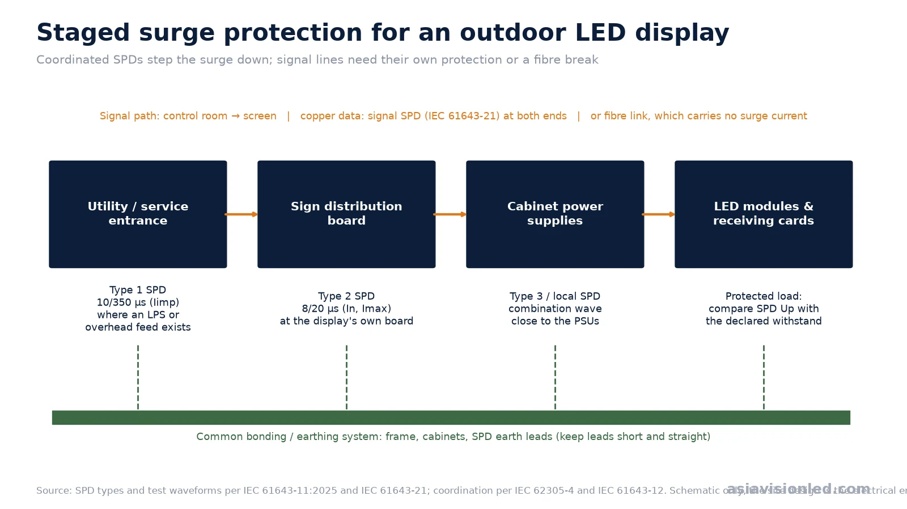
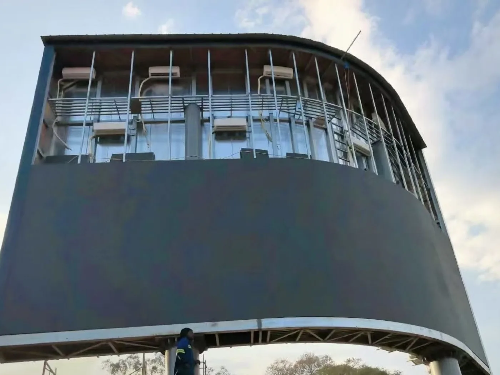

Outdoor LED screens sit high, on metal, often at the end of long cable runs, which is exactly where lightning and switching surges do damage. The failure is rarely dramatic. After a storm, a row of cabinets goes dark, a few receiving cards stop responding, or power supplies begin to fail in the months that follow. Most of this can be prevented, but only if protection is designed into the installation. A device bolted on after the first failure is too late.
This guide explains the layers of protection, the standards electrical designers work from, and what to ask your LED supplier and your electrical contractor. It complements our power distribution guide and IP rating guide.
A direct strike on the structure is the extreme case. The more common one is a nearby strike, or a switching event on the grid, that pushes a surge along the power feed or the data cable. Lightning-protection specialists point to the same vulnerable items in a display: the switch-mode power supplies, the receiving and sending cards, and any long signal run back to a control room. Those are the parts to protect.
Protection for an outdoor display has three parts that work together but cannot replace one another:
One supplier's electrical guidance puts it bluntly: a grounding conductor should not be described as an SPD, and an SPD should not be presented as a complete lightning protection system. A building with an LPS still needs its connected electronics reviewed. Each layer needs its own scope and a documented interface with the others.
IEC 62305 is the international standard for protection against lightning. It begins with a risk assessment that decides whether protection is needed and at what level, based on the site, the structure and what is connected to it. The level of protection follows from that assessment, not from a default figure. Part 4 of the standard, IEC 62305-4:2024, covers surge protection for electrical and electronic systems inside structures. It treats this as a whole system of design, installation, inspection, maintenance and testing, not a single part.
For a rooftop, mast or facade screen, the assessment belongs to the project's electrical designer. Your LED supplier's job is to give them accurate equipment data, as described below.
SPDs are tested and classified under IEC 61643-11, revised in 2025, and selected and coordinated under IEC 61643-12. Three types are used in stages:
Figure 1 shows how these stages sit between the grid and the LED cabinets.

Coordination matters as much as the parts. A large device at the entry and smaller ones near the equipment step the surge down in stages, while protection that is not coordinated can still let damaging energy through. When comparing devices, three datasheet points matter:
Long copper data runs between the control room and the screen act as antennas. Signal-line SPDs are covered by a separate standard, IEC 61643-21, revised in 2025. Use them at both ends of any copper run that leaves the building, and never use a power SPD on a data circuit or the reverse. The simpler option on long or exposed runs is a fibre link, which carries no surge current. Fibre between the control room and the screen also removes a common earth loop between two buildings.
Installation detail decides whether any of this works. Every conductor adds inductance, and a fast surge through a long, looping SPD lead adds voltage on top of the device's protection level. Keep SPD leads short and straight and route the earth path directly. Your electrical designer will check this on the drawings.
The display frame, every cabinet and the SPD earth terminals should be bonded to one earthing system, so a surge raises everything together instead of driving current between parts. Local electrical codes set the method. In the United States, for example, NEC Article 600 on electric signs requires metal sign parts to be grounded to the supply circuit's equipment grounding conductor and bonded, and LED signs are typically listed to UL 48. Our UL and ETL guide covers the listing side.
Figure 2 shows the steel behind a curved outdoor screen: every member of this frame is part of the bonding plan.

For the structural side of the same frame, see our billboard structure and wind load guide.
| Party | Responsibility |
|---|---|
| Electrical designer | IEC 62305 risk assessment, LPS interface, SPD selection and coordination, earthing design |
| LED supplier | Power supply input range and surge withstand, earthing points on cabinets, wiring and power data, recommended SPD positions inside the display |
| Electrical contractor | Installation, short SPD leads, bonding, test records |
| Owner or operator | Inspection after storms, SPD replacement, maintenance log |
Ask your LED supplier for the power supply's declared surge immunity. In Europe this is typically tested to IEC/EN 61000-4-5 as part of EMC work; see our EMC compliance guide. Also ask for the cabinet earthing details and a full wiring diagram. If a supplier cannot provide these, the designer is left guessing.
Our outdoor range includes the D-PRO (P5 to P10, up to 10,000 nits, front maintenance, common cathode option), the COB EH-PRO (IP65, 3500 nits) and the COB EF (flip-chip COB, 3000 nits). For each project we supply the power and wiring data your electrical designer needs to size the surge protection and earthing. Panels carry a 3-year warranty with 18-day factory dispatch.
Planning an outdoor screen on a roof, mast or facade? Send us the location and mounting details. We will share the power, earthing and wiring data your electrical designer needs, with a quote to match. Contact our team.